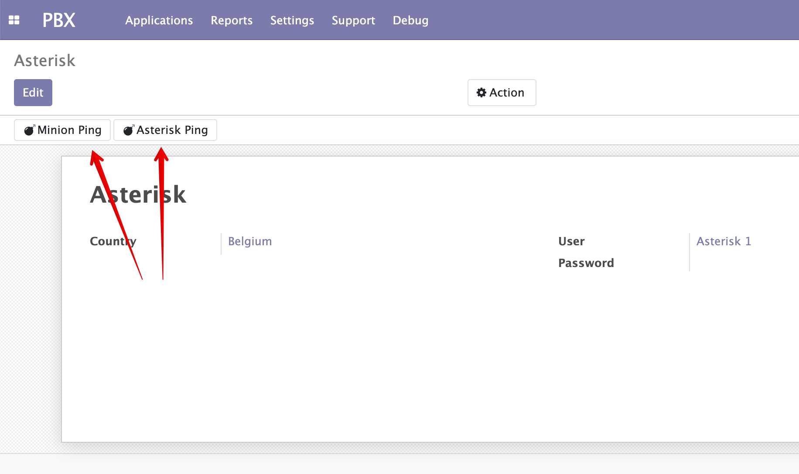

Configuration¶
During the installation process the admin user is automatically added to Asterisk Admin security group.
Server¶
Asterisk system account¶
Note
During the installation process a new odoo account is created named asterisk1 with default password asterisk1.
This account is used by the Agent to connect to your Odoo instance. Don’t use this account for anything else!
Though the permissions of this Asterisk user account are very limited (it belongs to the Portal group)
it is strictly recommended to change the default password of this account after installation is finished
(don’t forget to update odoo_password setting on the Agent).
Here is a short video demonstration how to do this:

Country settings¶
It is important to set the correct country for the Asterisk server because it is required to correctly process caller ID numbers that usually come in local format.
Internally all partner numbers in Odoo are stored in E.164 format. So country settings are used to correctly transform numbers from local to E.164 format.
Minion and Asterisk ping¶
To check the connection between Odoo and Asterisk use the following buttons:
Settings¶
General¶
Debug mode¶
When it is required to trace some issue enable the debug mode.
When debug mode is enabled
Salt¶
Here the Salt connection is configured. In the common setup all three Salt processes (master, api and minion) are running on the same server.
Salt API URL¶
URL of the Salt Master. By default https://agent:48008. Replace agent with the hostname of your Agent.
Salt API User & Password¶
To generate new password use the following command:
echo -n my-new-pass | md5sum
7ee84110eed69ed3d366eb85e017b508 -
Now use this hash to edit /etc/salt/auth file and put it there:
odoo|7ee84110eed69ed3d366eb85e017b508
After that restart the salt minion service (systemctl restart salt-minion). Now set username odoo and password my-new-pass as Salt credentials in Odoo.
PBX Users¶
PBX Users are Odoo users connected to Asterisk channels and extensions.
Note
This mapping is used in the following cases:
When Odoo user clicks to call a number on a form - the system must know which SIP user channel to dial in order to connect the call.
When call events come to Odoo it must decide which user is related to the event.
Odoo user can have multiple channels defined for him. In a typical scenario user has a hardware deskphone and also a softphone with a headset.
Normally user receives incoming calls on his desk phone.
But when a user wants to make a series of calls to partners it’s much handy to use a headset and click to dial function instead of manual phone number dialing.
Let’s review channel settings:
Channel¶
Asterisk channel, e.g. SIP/101 or SIP/max_lit.
Context¶
Asterisk context to use to place the outgoing call. In FreePBX related systems it is usually from-internal.
Some other systems define individual context for each user.
Originate¶
If Originate slider is on the channel will be used on click to dial operation. Usually when user a deskphone
and a softphone only softphone channel has Originate enabled so that when click to dial is used the deskphone
does not ring.
Auto-answer header¶
Auto answer is a very important business feature.
When click to dial is used to originate call to a partner Asterisk first makes a call to user (1-st call leg) and after user answered his phone the 2-nd call leg is originated to the partner number.
It is possible to auto answer the 1-st call leg using special channel headers. Different phones use different headers.
See also
For more details see common/auto_answer